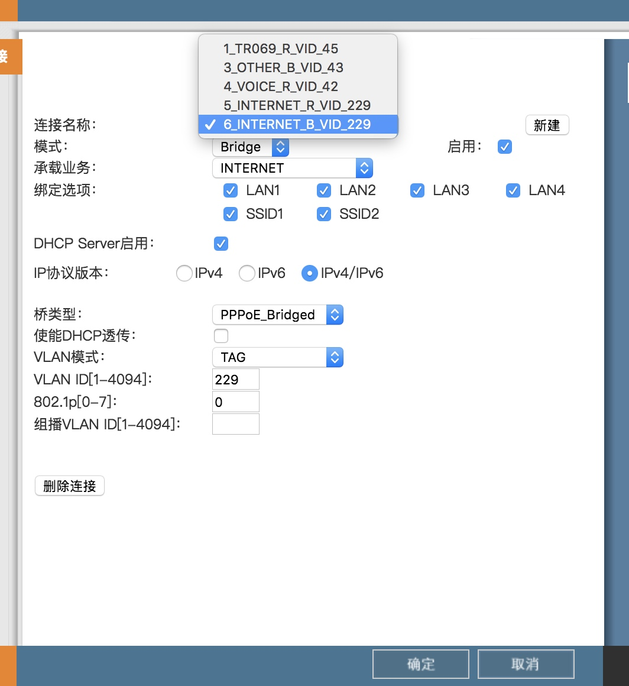

PT924光猫 更改桥接模式/路由模式
http://192.168.1.1:8080/cgi-bin/index2.asp 进入这个页面
用useradmin账号密码登录将地址改为http://192.168.1.1:8080/cgi-bin/net-wanset.asp 进入internet设置页面(更改其他地址也会进入其他页面)

其中6_INTERNET_B_VID_229是桥接模式，路由器需要拨号，而5_INTERNET_R_VID_229是路由模式，由猫拨号，路由器不需要拨号

Copyright © 2015 Powered by MWeb, Theme used GitHub CSS.